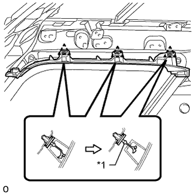
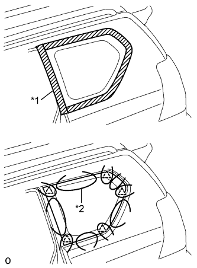
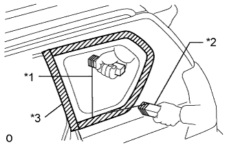

QUARTER WINDOW GLASS > REMOVAL |
| 1. REMOVE ROOF HEADLINING ASSEMBLY |
Remove the roof headlining (Click here).
| 2. REMOVE NO. 1 ROOF SIDE RAIL GARNISH LH |
|  |
Detach the 3 clips.
Cut off clip A.
Remove the roof side rail garnish.
Remove clip A from the vehicle body.
| *1 | Clip A |
| 3. REMOVE QUARTER WINDOW ASSEMBLY LH |
|  |
From the interior, insert a piano wire between the vehicle body and quarter window glass as shown in the illustration.
| *1 | Protective Tape |
| *2 | Piano Wire |
|  |
Tie objects that can serve as handles (for example, wooden blocks) to both wire ends.
Cut through the adhesive by pulling the piano wire around the quarter window glass.
| *1 | Piano Wire |
| *2 | Wooden Blocks |
| *3 | Protective Tape |
Using suction cups, remove the quarter window glass.
| 4. CLEAN VEHICLE BODY |
 |
Clean and shape the contact surface of the vehicle body.
| *1 | Adhesive |
| *2 | Vehicle Body |
On the contact surface of the vehicle body, use a knife to cut away excess adhesive as shown in the illustration.
Clean the contact surface of the vehicle body with cleaner.